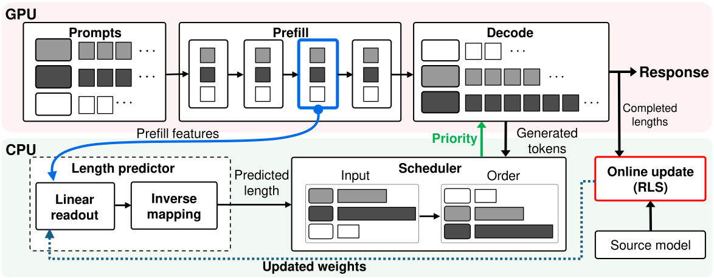
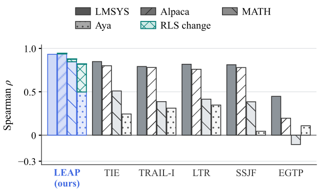
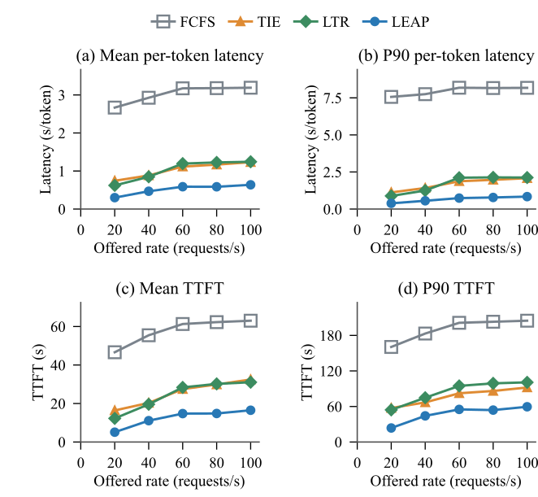
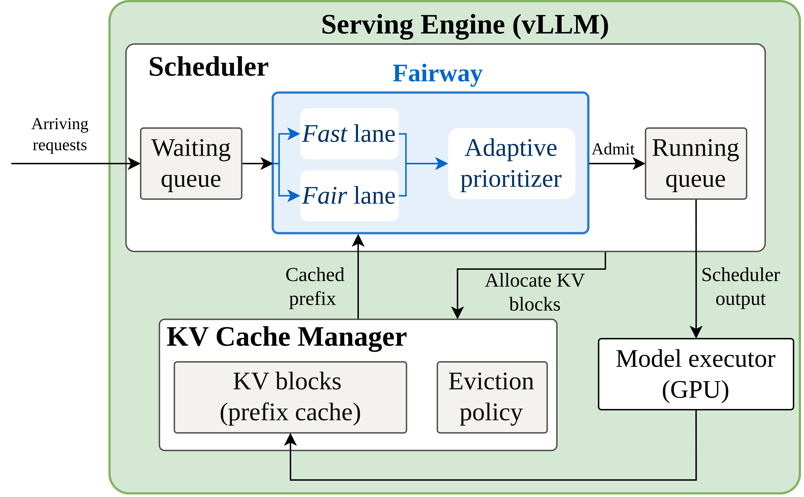
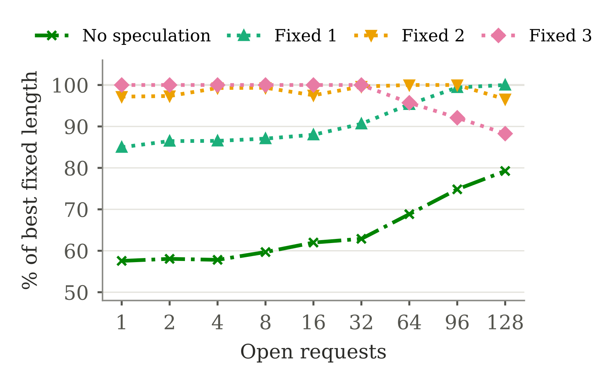

Contents · 9 sections
1What problem is it actually solving?2The pipeline3Why one hidden state and one linear layer are enough4When the domain shifts: correcting from finished requests5Does running on CPU slow the scheduler?6Is serving actually faster?7Limitations I see8How a search or recommendation team could try it9VerdictSHARE
LEAP (the paper's length prediction system) is built for scheduling LLM inference: it predicts how long each request will generate straight from the serving model's own hidden states, using a single linear layer on one layer's hidden state that runs on CPU, and keeps correcting it after deployment with each request's true length. A scheduler uses the prediction to run short requests first, which clearly lowers average latency; existing length predictors, by contrast, rank worse when the domain changes and cost GPU time of their own. LEAP finds that the hidden states the serving model computes during prefill already carry an output-length signal, so no separate encoder is needed. The linear layer runs on CPU, in parallel with the rest of prefill on the GPU, so it takes no GPU time. As requests finish, LEAP collects their true lengths and, every eight of them, uses recursive least squares to correct the layer's weights, with no replay of old data. In single-GPU experiments on ShareGPT traffic, average per-token latency is 15.9% to 40.8% lower than with several existing predictors. Teams running LLM inference should read it. A length predictor should be judged by latency after scheduling and by its own cost.
What problem is it actually solving?
An inference engine can only advance a limited number of requests per decode step. In the paper's setup, up to 512 requests sit in memory but only 64 decode slots exist per step. When requests outnumber slots, something must decide who goes first. The trouble with FCFS is that one 2,000-token answer holds a slot while several short answers wait behind it.
An illustrative example: three requests arrive together and one advances per step.
| Request (illustrative) | True output length | Finish time under FCFS | Finish time with short-first |
|---|---|---|---|
| A: write a long report | 1000 steps | 1000 | 1150 |
| B: translate a sentence | 50 steps | 1050 | 50 |
| C: answer yes or no | 100 steps | 1150 | 150 |
| Average | 1067 | 450 |
Short-first cuts the average finish time from 1067 to 450 (illustrative). But the scheduler does not know A will take 1000 steps; it has to predict. Two requirements follow. The prediction must separate 50 from 500, while guessing 53 instead of 50 hardly matters; the paper builds on this point, since scheduling needs ranking. And the prediction itself must be cheap, or the predictor eats the GPU time it was meant to save.
Existing predictors fall short on both ranking quality and cost, and they come in two kinds. The first kind runs a separate model over the prompt: TIE (an uncertainty-aware length predictor) and SSJF (a small proxy-model predictor) each run a text encoder, and LTR trains a separate ranking model that outputs only ordering scores between requests, not lengths. These have 110 to 185 million parameters and compete with the serving model for the GPU. The second kind reuses the serving model's hidden states but attaches an MLP with millions of parameters; this kind includes TRAIL (an MLP placed directly on the hidden states) and EGTP (which first pools hidden states weighted by each token's entropy, then predicts length). Worse, a predictor trained on one dataset ranks noticeably worse on another task or language, and recovering means new data, retraining and redeployment.
The pipeline

LEAP has three core components: the linear readout, online correction and asynchronous CPU execution. The table follows the order a request meets them; countdown scheduling is the scheduler that consumes the predictions:
| Stage | Where | Input | Output |
|---|---|---|---|
| Feature capture (asynchronous CPU execution) | GPU to CPU, in parallel with the rest of prefill | hidden state of the last prompt token at layer 30 during prefill | a 4096-dim vector |
| Linear readout | CPU | that vector | predicted total output length |
| Countdown scheduling | CPU | predicted total, tokens generated so far | remaining length; shortest remaining goes first when slots run out |
| Online correction | CPU background thread | features and true lengths of finished requests | new readout weights |
The division of labor: the serving model understands the request, the linear layer only converts that understanding into a length, and RLS (recursive least squares) recalibrates the conversion to the new traffic after deployment, and asynchronous CPU execution keeps all of this from slowing the GPU.
Why one hidden state and one linear layer are enough
During prefill the serving model has already read the whole prompt, and it is the very model that will write the answer. Its hidden state holds both the prompt content and information about how this model is about to respond. Running a second encoder over the prompt repeats that work.
LEAP takes the last prompt token's hidden state at layer 30 of Qwen3-8B (late but not final), standardizes it with training-set means and scales, and fits a Ridge regression. The whole predictor has 4,097 parameters, 16.39 KB in FP32, small enough to stay in one CPU core's private cache.
The target is the square root of the length, not the length itself, because the target decides which errors matter. Fitting raw length lets a few very long answers dominate the loss. Fitting log length penalizes a 100-token error on a long request so little that long requests blur together. Square root sits in between. For the same 100-token miss (illustrative):
| True length | Error on the square-root target | Error on the log target |
|---|---|---|
| 100 guessed as 200 | √200 − √100 ≈ 4.1 | ln2 ≈ 0.69 |
| 1000 guessed as 1100 | √1100 − √1000 ≈ 1.5 | ln1.1 ≈ 0.10 |
On the log target the miss on the long request is barely penalized (0.10 against 0.69); on the square-root target it is still 1.5 against 4.1. The ablation in Table 6 shows where each target is strong. On short requests of at most 256 tokens, the log target has the lowest mean error (50.7) and raw length the highest (105.4). On long requests over 1,024 tokens, raw length is best (266.3), square root is close (279.3) and log is worst (310.4). Square root does well on both ends and has the lowest overall error (149.6), so it is the default. At prediction time the output is clipped to between 1 and √M before squaring (M is the output budget, 2,048 in the experiments, so the upper bound is about 45.3), so a very negative value cannot turn into a huge length.
Is one layer enough? In Table 7, concatenating all layers lowers mean error by only 3.3%, while the data sent to the CPU per request grows from 16 KiB to 592 KiB. So adding other layers beyond layer 30 gains little and costs much more to move. Layer 30 is the paper's pre-existing default, not selected on the test sets.
When the domain shifts: correcting from finished requests
Trained on LMSYS conversations and moved unchanged to Alpaca instructions, MATH problems and multilingual Aya, the readout still ranks well on Alpaca and MATH, but Spearman correlation on Aya falls to 0.498. When the language changes, the mapping from hidden state to length changes too.
The correction signal is free: when a request finishes, its true length is known. RLS is the incremental form of linear regression. It keeps a matrix that records how much uncertainty remains in each direction of the feature space: small where old data covers it well, large where it has rarely been seen. for each new batch it computes the correction in closed form, without gradients or old samples. The core update is one line:
is the current readout weight, the features of the finished batch, the square roots of their true lengths, so is the batch's prediction error, and sets how much that error moves the weights: compute , then , and afterwards for the next batch. starts as from the LMSYS training features . Directions well covered by old data get a small correction and barely move; directions that only appear in new traffic get a large correction and change more. Hoot says

Illustrative: one feature direction, batch feature U=1, prediction error y−Uθ=2. The gain is G=P/(1+P) and the correction is G times the error. P records how much uncertainty is left in this direction: directions common in LMSYS have small P, the left end, where the weight barely moves; directions seen only in new traffic such as Aya have large P, the right end, where the correction nears the error itself. Drag the slider to see the correction change with P. Source: illustrative example of the paper's RLS update θ+=θ+G(y−Uθ), G=V(I+UV)⁻¹
RLS starts from the LMSYS weights, not from zero. With little feedback the model stays close to the original; with more it shifts toward the new traffic. The paper proves the batch-by-batch result equals solving the same anchored objective once with all feedback at hand, so batch size only changes timing. On Aya, RLS raises Spearman correlation from 0.498 to 0.820, a 64.7% relative gain, touching only the readout.

Does running on CPU slow the scheduler?
The risk is that the GPU is ready to decode while the length is still being computed. LEAP copies the hidden state to the CPU as soon as prefill reaches layer 30; the GPU continues with the remaining layers while the CPU does one dot product and sets the initial order. A GPU probe before the final RMSNorm found the result ready in all 144 asynchronous trials and in none of the 72 controls that started only after prefill.
Throughput is enough too: one CPU core keeps up with 10,000 predictions per second, saturates near 58,000, and keeps P95 delay under 3 ms. RLS runs in another thread, updating after every 8 finished requests, while the scheduler keeps using the last published weights.
Is serving actually faster?
Table 3 replays the same ShareGPT requests and generation trajectories at 2.65 requests per second under one scheduling rule, changing only the predictor and counting all its cost. PTL (per-token latency) is each request's latency from planned arrival to completion (including prediction, queueing and execution) divided by its actual output tokens, then averaged over requests; it is not inter-token latency.
| Method | Mean PTL (ms/token) | P90 PTL | Mean TTFT (ms) | Throughput (token/s) |
|---|---|---|---|---|
| FCFS | 250.97 | 359.96 | 55.10 | 1094.03 |
| TRAIL | 107.42 | 189.32 | 67.18 | 944.71 |
| TIE | 78.48 | 152.33 | 66.50 | 1089.84 |
| SSJF | 76.07 | 154.50 | 62.27 | 1108.46 |
| LTR | 75.62 | 151.95 | 60.40 | 1120.88 |
| LEAP | 63.58 | 127.47 | 55.27 | 1141.93 |
LEAP's mean PTL is 15.9% below the strongest baseline, LTR, and 40.8% below TRAIL; throughput is 1.9% above LTR, and TTFT is nearly the same as FCFS. That is consistent with keeping prediction on the CPU and off the GPU, though Table 3 is a single run.

In the load sweep of Figure 6, all three predictors stay far below FCFS, so most of the gain over FCFS comes from length ordering itself. LEAP's remaining margin mixes more accurate ranking with keeping prediction off the GPU, and this single-run experiment does not separate the two.
Scheduling after domain transfer is simulated (Table 4, prediction cost excluded, all methods sharing the same waiting protection). With arrivals at 1.5 times the capacity measured in an FCFS simulation, RLS helps most on Aya: mean response time falls from 180.59 s with frozen LEAP to 161.18 s. On MATH at the same load, it falls from 118.34 s with TIE to 100.94 s with LEAP and 94.36 s with RLS. The gap widens with load, because longer queues make order matter more.
Better prediction does not always mean faster serving, and Table 2 gives a counterexample: refreshing predictions during decode lowers error but raises LEAP's mean response time by 8.37% to 9.42% and TRAIL's by 9.16% to 12.89%, because repeated prediction costs time. The paper also notes that the two prediction heads use different training targets, so this comparison does not isolate feature refresh alone. That is why LEAP captures features once at prefill and counts down; only when RLS publishes new weights does it rescore live requests from the cached features.
Limitations I see
First, long requests pay. Length-aware scheduling favors short work. In Table 4 every method already uses the same waiting protection (TIE's exponential aging rule, which raises a request's priority the longer it waits), yet on MATH RLS still raises P95, and LEAP, LEAP with RLS and TIE all have higher P95 than FCFS. Services with SLAs on long jobs should measure tail latency separately and tune how strong this protection is.
Second, the serving setup is simple: single-GPU, eager-mode vLLM 0.8.5, no prefix caching, no chunked prefill, no multi-GPU. With chunked prefill, when the layer-30 state becomes available is less clear, and whether the CPU still finishes in time must be re-measured.
Third, the readout ignores decoding settings. Temperature and top-k change output length for the same prompt, and a prefill-only feature cannot see them. Table 3 is a single run with no variance.
How a search or recommendation team could try it
Teams serving generative search summaries or conversational recommendation usually mix short and long answers:
- Validate the signal offline: take logged requests, run prefill with your serving model, grab a late-layer hidden state, fit a Ridge regression on square-root length, and check Spearman correlation. For reference, frozen LEAP reaches only 0.498 on Aya in the paper and still schedules better than TIE.
- Change only the scheduler in replay: use predicted remaining length to assign decode slots, compare mean and P90 latency with FCFS, and watch long-request P95 with a waiting cap.
- Add RLS: test transfer to traffic a week later or from another product line and see how much online correction recovers. At 4096 dims, RLS state is about 64 MiB.
- Go live last: confirm CPU prediction finishes within your prefill time, then run a small A/B.
Verdict
The key lesson: length prediction serves ordering, so judge it by post-scheduling latency and its own cost; judging by prediction error alone picks the wrong design.
| Dimension | Assessment |
|---|---|
| Problem importance | High. Length-aware scheduling is a common serving optimization, and predictor cost and transfer have blocked adoption |
| Novelty | Medium. Hidden-state length prediction exists; the new part is the linear readout, square-root target and anchored RLS together |
| Evidence | Medium-high. Three models, several datasets, serving runs that count prediction cost; but single runs on one GPU |
| Engineering cost | Low to medium. The predictor has 4,097 parameters and one CPU dot product, but you must capture the layer-30 hidden state inside the forward pass, copy it to the CPU asynchronously, and add a CPU worker and an RLS update thread |
| Worth trying | Yes. Offline validation needs only logs and one Ridge fit |
How did this read for you?
Hoot made a note. Thanks for the feedback.
One tap, no sign-in; tap again to undo. Only anonymous counts are kept, never who you are.
Related papersMore from Paper Daily
 Infra · 2026-10-27C 2 KV: Compressed and Composable KV Cache Reuse for Efficient LLM InferenceRetrieval-augmented generation stitches several retrieved documents into the context, and recomputing their KV caches from scratch every time is expensive, so some methods store each document's KV cache and concatenate them on use. But long documents have huge KV caches, so storing and loading them becomes the bottleneck, and naively compressing them before concatenation hurts accuracy badly. Thi…
Infra · 2026-10-27C 2 KV: Compressed and Composable KV Cache Reuse for Efficient LLM InferenceRetrieval-augmented generation stitches several retrieved documents into the context, and recomputing their KV caches from scratch every time is expensive, so some methods store each document's KV cache and concatenate them on use. But long documents have huge KV caches, so storing and loading them becomes the bottleneck, and naively compressing them before concatenation hurts accuracy badly. Thi…
Infra · 2026-11-04Fairway: Load-Aware KV Cache Reuse for LLM Prefill SchedulingPrefill queueing under a prefix cache can keep both the median latency low and the tail short. While the queue is short, serve cheap requests with long cache hits first; move a request forward the longer it has waited relative to its own prefill time; and cap how much work cheap requests may place ahead of the oldest request. This is what Fairway does. Agent and RAG requests often share a prefix,…
Infra · 2026-11-02TableTune: Measured, Self-Correcting Draft-Length Tables for Dynamic Speculative DecodingThe table in vLLM's documentation that sets how many tokens speculative decoding guesses per step at each batch size can visibly cut throughput on a different GPU or model. This paper gives a tool that measures the best table in minutes and keeps correcting it as traffic changes. Speculation only pays while the GPU has spare compute, so the more requests share a batch, the fewer tokens each step…
Discussion
Add experiment details, reproduction notes or a different take. Requires a GitHub sign-in.
Loading the discussion…